Topic 1-01: GO gene sets
Zuguang Gu z.gu@dkfz.de
2025-05-31
Source:vignettes/topic1_01_GO.Rmd
topic1_01_GO.RmdTo obtain GO gene sets, we need to use two packages: GO.db and org.*.db packages.
The GO.db package
We first load the package.
library(GO.db)GO data is represented in two formats:
- vector-like format,
- table-like format.
As a vector-object
The object GOTERM can be thought of as a list of single
GO terms.
GOTERM## TERM map for GO (object of class "GOTermsAnnDbBimap")There are two interfaces to convert it to common formats:
There are the following three types of useful information for each GO Term:
- GO name
- GO description/definition
- GO ontology/namespace
Three helper getter functions Term(),
Definition() and Ontology() can be directly
applied to GOTERM:
## GO:0000001
## "mitochondrion inheritance"
## GO:0000002
## "mitochondrial genome maintenance"
## GO:0000006
## "high-affinity zinc transmembrane transporter activity"
## GO:0000007
## "low-affinity zinc ion transmembrane transporter activity"
## GO:0000009
## "alpha-1,6-mannosyltransferase activity"
## GO:0000010
## "heptaprenyl diphosphate synthase activity"
head(Definition(GOTERM))## GO:0000001
## "The distribution of mitochondria, including the mitochondrial genome, into daughter cells after mitosis or meiosis, mediated by interactions between mitochondria and the cytoskeleton."
## GO:0000002
## "The maintenance of the structure and integrity of the mitochondrial genome; includes replication and segregation of the mitochondrial chromosome."
## GO:0000006
## "Enables the transfer of zinc ions (Zn2+) from one side of a membrane to the other, probably powered by proton motive force. In high-affinity transport the transporter is able to bind the solute even if it is only present at very low concentrations."
## GO:0000007
## "Enables the transfer of a solute or solutes from one side of a membrane to the other according to the reaction: Zn2+ = Zn2+, probably powered by proton motive force. In low-affinity transport the transporter is able to bind the solute only if it is present at very high concentrations."
## GO:0000009
## "Catalysis of the transfer of a mannose residue to an oligosaccharide, forming an alpha-(1->6) linkage."
## GO:0000010
## "Catalysis of the reaction: (2E,6E)-farnesyl diphosphate + 4 isopentenyl diphosphate = 4 diphosphate + all-trans-heptaprenyl diphosphate."## GO:0000001 GO:0000002 GO:0000006 GO:0000007 GO:0000009 GO:0000010
## "BP" "BP" "MF" "MF" "MF" "MF"As a table-object
The GO.db package is built on top of a low-level infrastructure package AnnotationDbi. Thus, almost all Bioconductor “official data packages” inhert the same interface for querying data. Two important points:
- There is a database object which has the same name as the package name.
- They all implement the
select()interface where the “database” can be thought of as a single virtual table.
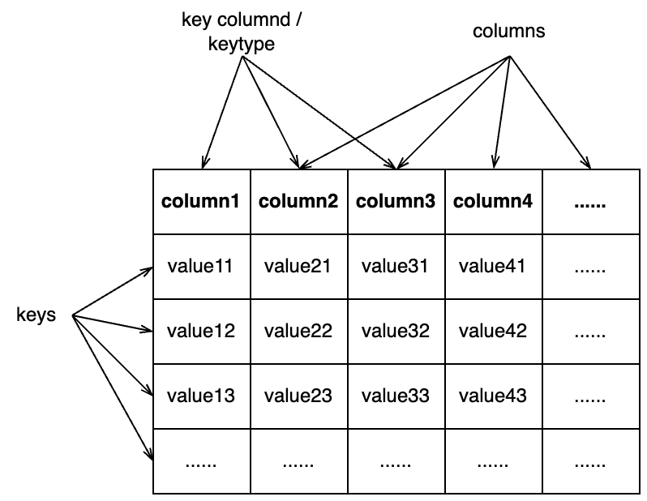
GO.db## GODb object:
## | GOSOURCENAME:
## | GOSOURCEURL:
## | GOSOURCEDATE:
## | Db type: GODb
## | package: AnnotationDbi
## | DBSCHEMA: GO_DB
## | GOEGSOURCEDATE: 2024-Sep20
## | GOEGSOURCENAME: Entrez Gene
## | GOEGSOURCEURL: ftp://ftp.ncbi.nlm.nih.gov/gene/DATA
## | DBSCHEMAVERSION: 2.1GO.db is a relatively simple database. The typical use
is as:
## GOID ONTOLOGY TERM
## 1 GO:0000001 BP mitochondrion inheritance
## 2 GO:0000002 BP mitochondrial genome maintenanceIt can be read as “select records in the ONTOLOGY and TERM columns of the GO.db table where GOID is GO:0000001 or GO:0000002”.
The valid columns that can be searched in:
keytypes(GO.db)## [1] "DEFINITION" "GOID" "ONTOLOGY" "TERM"The valid columns that can be get value from.
columns(GO.db)## [1] "DEFINITION" "GOID" "ONTOLOGY" "TERM"In most cases keytypes() and columns()
return the same set of columns.
Question: How to get all BP terms with
select()?
Unfortunately, we cannot use select() to query something
like: “select go_id from GO.db where the namespace is ‘BP’ and go_name
contains ‘cell cycle’”. select() is not a full functional
search interface of the internal SQLite database. You need to do it in
two steps.
- get the complete table of BP terms and save it as an R data frame.
- filter the data frame in R
tb = select(GO.db, keys = "BP", keytype = "ONTOLOGY", columns = c("GOID", "TERM"))
tb[grep("cell cycle", tb$TERM), ] |> head()## ONTOLOGY GOID TERM
## 26 BP GO:0000075 cell cycle checkpoint signaling
## 31 BP GO:0000082 G1/S transition of mitotic cell cycle
## 34 BP GO:0000086 G2/M transition of mitotic cell cycle
## 76 BP GO:0000278 mitotic cell cycle
## 93 BP GO:0000320 re-entry into mitotic cell cycle
## 94 BP GO:0000321 re-entry into mitotic cell cycle after pheromone arrestThe hierarchical relations of GO terms
GO.db provides variables that contain relations
between GO terms. Taking biological process (BP) namespace as an
example, there are the following four variables (similar for other two
namespaces, but with GOCC and GOMF
prefix).
GOBPCHILDRENGOBPPARENTSGOBPOFFSPRINGGOBPANCESTOR
GOBPCHILDREN and GOBPPARENTS contain
parent-child relations. GOBPOFFSPRING contains all
offspring terms of GO terms (i.e., all downstream terms of a term in the
GO tree) and GOBPANCESTOR contains all ancestor terms of a
GO term (i.e., all upstream terms of a term). The information in the
four variables are actually redundant, e.g., GOBPOFFSPRING
can be constructed from GOBPCHILDREN recursively. However,
these pre-computated objects will save time in downstream analysis
because traversing the GO tree is time-consuming.
The four variables are in the same format (objects of the
AnnDbBimap class). Taking GOBPCHILDREN as an
example, we can convert it to a simpler format by:
as.list()asTable()
as.list() is also suggested by GO.db in
its documentation.
## $`GO:0000001`
## [1] NA
##
## $`GO:0000002`
## part of
## "GO:0032042"
##
## $`GO:0000011`
## [1] NA
##
## $`GO:0000012`
## regulates negatively regulates positively regulates
## "GO:1903516" "GO:1903517" "GO:1903518"
## isa isa
## "GO:1903823" "GO:1990396"
##
## $`GO:0000017`
## [1] NA
##
## $`GO:0000018`
## isa isa isa isa isa isa
## "GO:0000019" "GO:0010520" "GO:0010569" "GO:0045191" "GO:0045910" "GO:0045911"
## isa isa isa
## "GO:0061806" "GO:0072695" "GO:1903110"lt is a simple list of vectors where each vector are
child terms of a specific GO term, e.g., GO:0000002 has a
child term GO:0032042. The element vectors in
lt are also named and the names represent the relation of
the child term to the parent term. When the element vector has a value
NA, e.g. GO::0000001, this means the GO term
is a leaf in the GO tree, and it has no child term (in this scenario,
using character(0) instead of NA might be more
proper).
toTable() converts the object to a data frame which
provides identical information as the list:
## go_id go_id RelationshipType
## 1 GO:0032042 GO:0000002 part of
## 2 GO:1903516 GO:0000012 regulates
## 3 GO:1903517 GO:0000012 negatively regulates
## 4 GO:1903518 GO:0000012 positively regulates
## 5 GO:1903823 GO:0000012 isa
## 6 GO:1990396 GO:0000012 isaUnfortunately, the first two columns in tb have the same
name. A good idea is to add meaningful column names to it.
Please note, the previous column names
c("child", "parent") are only valid for
GOBPCHILDREN. If it is from one of the three
GOBP* objects, readers please inspect the output to
determine proper column names for it. E.g. you should assign
c("parent", "child") to GOBPPARENTS.
With tb, we can calculate the fraction of different
relations of GO terms.
##
## isa negatively regulates part of
## 46920 2639 4825
## positively regulates regulates
## 2650 3040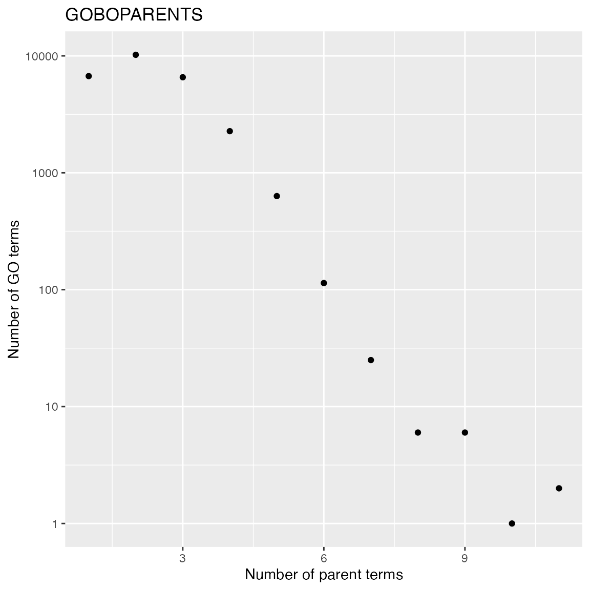
##
## isa part of
## 12827 8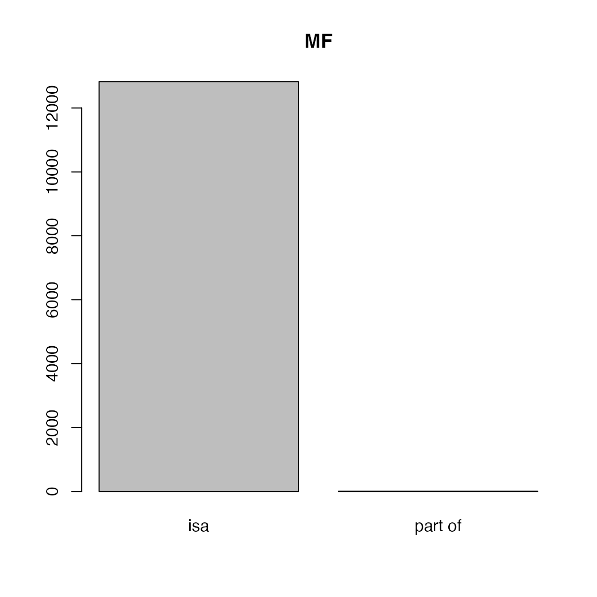
##
## isa part of
## 4617 1787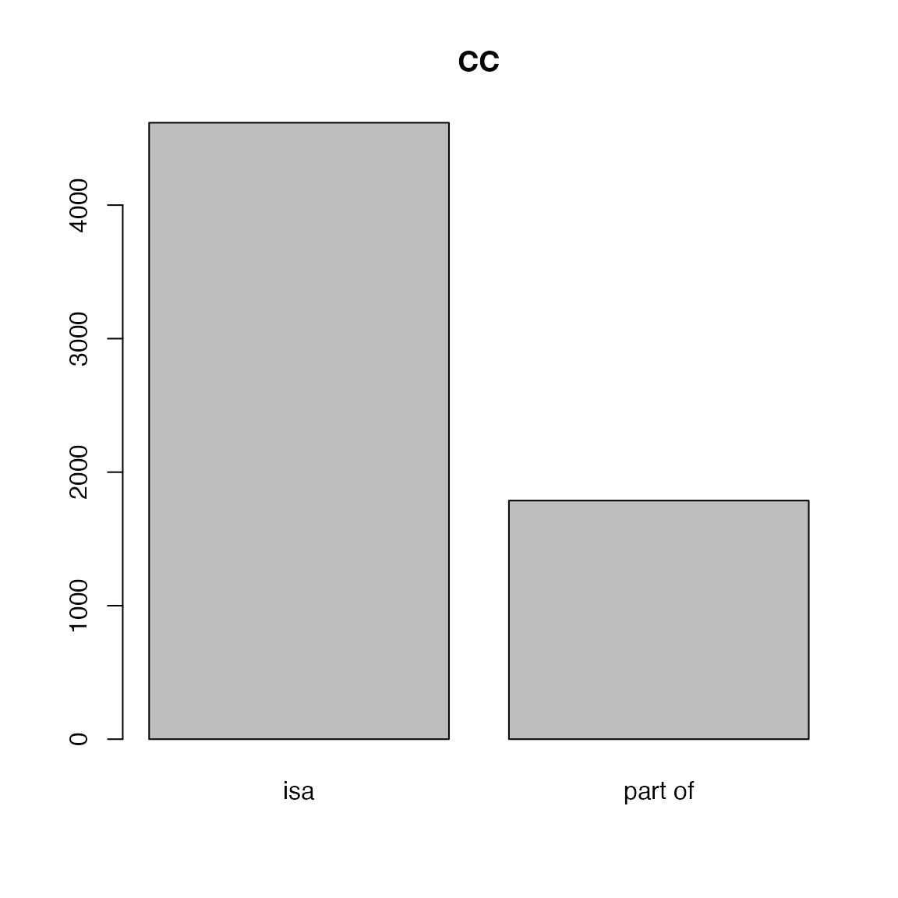
We can look at the distribution of the numbers of GO terms in each object.
- Number of child terms. The following plot shows it follows a power-law distribution (majority of GO terms have very few child terms).
lt = as.list(GOBPCHILDREN)
tb = table(sapply(lt, length))
x = as.numeric(names(tb))
y = as.vector(tb)
library(ggplot2)
ggplot(data.frame(x = x, y = y), aes(x = x, y = y)) +
geom_point() +
scale_x_continuous(trans='log10') +
scale_y_continuous(trans='log10') +
labs(x = "Number of child terms", y = "Number of GO terms") + ggtitle("GOBPCHILDREN")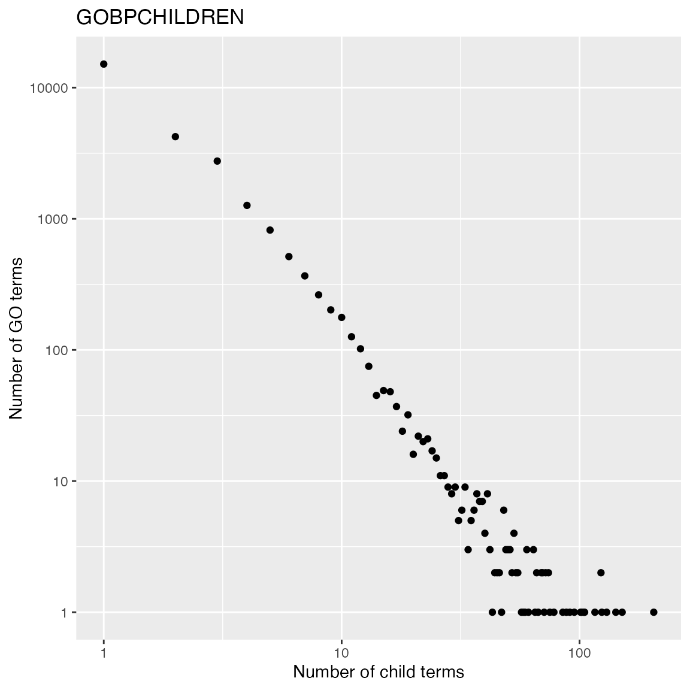
- Number of parent terms. The term “GO:0008150” (biological process) is removed from the analysis because it is the top node in BP namespace and it has no parent term.
lt = as.list(GOBPPARENTS)
lt = lt[names(lt) != "GO:0008150"]
tb = table(sapply(lt, length))
x = as.numeric(names(tb))
y = as.vector(tb)
ggplot(data.frame(x = x, y = y), aes(x = x, y = y)) +
geom_point() +
scale_y_continuous(trans='log10') +
labs(x = "Number of parent terms", y = "Number of GO terms") + ggtitle("GOBOPARENTS")
GOBPCHILDREN and GOBPPARENTS contain
“local/direct” relations between GO terms, GOBPOFFSPRING
and GOBPANCESTOR contain “local + distal” relations between
GO terms.
lt = as.list(GOBPOFFSPRING)
lt[1:2]## $`GO:0000001`
## [1] NA
##
## $`GO:0000002`
## [1] "GO:0006264" "GO:0032042" "GO:0032043" "GO:0043504" "GO:0090296"
## [6] "GO:0090297" "GO:0090298" "GO:0110166" "GO:0140909" "GO:1901858"
## [11] "GO:1901859" "GO:1901860" "GO:1905951"## go_id go_id
## 1 GO:0006264 GO:0000002
## 2 GO:0032042 GO:0000002
## 3 GO:0032043 GO:0000002
## 4 GO:0043504 GO:0000002
## 5 GO:0090296 GO:0000002
## 6 GO:0090297 GO:0000002For querying single GO terms, you don’t need to explicitly convert
the object to a list, but using [[ instead.
We can compare child terms and all offspring terms of “GO:0000002”:
GOBPCHILDREN[["GO:0000002"]]## part of
## "GO:0032042"
GOBPOFFSPRING[["GO:0000002"]]## [1] "GO:0006264" "GO:0032042" "GO:0032043" "GO:0043504" "GO:0090296"
## [6] "GO:0090297" "GO:0090298" "GO:0110166" "GO:0140909" "GO:1901858"
## [11] "GO:1901859" "GO:1901860" "GO:1905951"There is a pseudo term in GO.db with the name “all”, which connects three ontologies of GO.
GOTERM[["all"]]## GOID: all
## Term: all
## Ontology: universal
## Definition: NAThis all term is only recorded in
GOBPPARENTS and GOBPANCESTOR.
GOBPPARENTS[["GO:0008150"]]## isa
## "all"There are several methods to construct GOBPOFFSPRING
from GOBPCHILDREN/GOBPPARENTS.
- For each term, we can recursively add child terms until reaching the leaf terms. This method traverses the GO DAG from top (root) to bottom (leaves) in a depth-first search manner.
lt_children = as.list(GOBPCHILDREN)
add_children = function(term, env) {
children = lt_children[[term]]
if(identical(children, NA)) {
return(NULL)
}
env$offspring = c(env$offspring, children)
lapply(children, add_children, env)
}
i = 0
lt_offspring = lapply(lt_children, function(x) {
i <<- i + 1
cat(i, "/", length(lt_children), "\n")
if(identical(x, NA)) {
return(x)
} else {
env = new.env()
env$offspring = character(0)
for(y in x) {
add_children(y, env)
}
unique(env$offspring)
}
})This method is very slow due to that a term may have multiple parents. Then a parent-child relation may be repeated visited for terms close to root.
- Or we traverse the DAG from bottom to top, and we recursively add
the set of offsprings of a term to its parent terms. This method also
sues
GOBPPARENTS.
current_terms = names(lt_children)[sapply(lt_children, function(x) identical(x, NA))]
lt_offspring = vector("list", length(lt_children))
names(lt_offspring) = names(lt_children)
lt_parents = as.list(GOBPPARENTS)
while(length(current_terms)) {
current_terms2 = NULL
for(t in current_terms) {
for(p in setdiff(lt_parents[[t]], "all")) {
lt_offspring[[p]] = union(c(lt_offspring[[t]], t), lt_offspring[[p]])
current_terms2 = c(current_terms2, p)
}
}
current_terms = unique(current_terms2)
}
lt_offspring = lapply(lt_offspring, unique)This method is more efficient because the parent-child relation is only visited once in the traversal.
Link GO terms to genes
GO.db only contains information for GO terms. GO also provides gene annotated to GO terms, by manual curation or computational prediction. Such annotations are represented as mappings between GO IDs and gene IDs from external databases, which are usually synchronized between major public databases such as NCBI.
org.Hs.eg.db
To obtains genes in each GO term in R, Bioconductor provides a family of packages with name of org.*.db. Let’s take human for example, the corresponding package is org.Hs.eg.db. org.Hs.eg.db provides a standard way of providing mappings from Entrez gene IDs to a variaty of other databases.
library(org.Hs.eg.db)Similarly, org.Hs.eg.db is a database object.
org.Hs.eg.db## OrgDb object:
## | DBSCHEMAVERSION: 2.1
## | Db type: OrgDb
## | Supporting package: AnnotationDbi
## | DBSCHEMA: HUMAN_DB
## | ORGANISM: Homo sapiens
## | SPECIES: Human
## | EGSOURCEDATE: 2024-Sep20
## | EGSOURCENAME: Entrez Gene
## | EGSOURCEURL: ftp://ftp.ncbi.nlm.nih.gov/gene/DATA
## | CENTRALID: EG
## | TAXID: 9606
## | GOSOURCENAME:
## | GOSOURCEURL:
## | GOSOURCEDATE:
## | GOEGSOURCEDATE: 2024-Sep20
## | GOEGSOURCENAME: Entrez Gene
## | GOEGSOURCEURL: ftp://ftp.ncbi.nlm.nih.gov/gene/DATA
## | KEGGSOURCENAME: KEGG GENOME
## | KEGGSOURCEURL: ftp://ftp.genome.jp/pub/kegg/genomes
## | KEGGSOURCEDATE: 2011-Mar15
## | GPSOURCENAME: UCSC Genome Bioinformatics (Homo sapiens)
## | GPSOURCEURL: ftp://hgdownload.cse.ucsc.edu/goldenPath/hg38/database
## | GPSOURCEDATE: 2024-Sep22
## | ENSOURCEDATE: 2024-May14
## | ENSOURCENAME: Ensembl
## | ENSOURCEURL: ftp://ftp.ensembl.org/pub/current_fasta
## | UPSOURCENAME: Uniprot
## | UPSOURCEURL: http://www.UniProt.org/
## | UPSOURCEDATE: Mon Sep 23 15:46:45 2024You can use select() to obtain gene-GO term relations,
but there are already objects calculated and easier to use. In this
package, there are two objects for mapping between GO IDs and genes:
org.Hs.egGO2EGorg.Hs.egGO2ALLEGS
The difference between the two objects is org.Hs.egGO2EG
contains genes that are directly annotated to every GO term,
while org.Hs.egGO2ALLEGS contains genes that directly
assigned to the GO term, as well as genes assigned to all its
offspring terms. For example if term A is a parent of term B where A is
more general, genes with function B should also have function A. Thus
org.Hs.egGO2ALLEGS is the correct object for GO gene
sets.
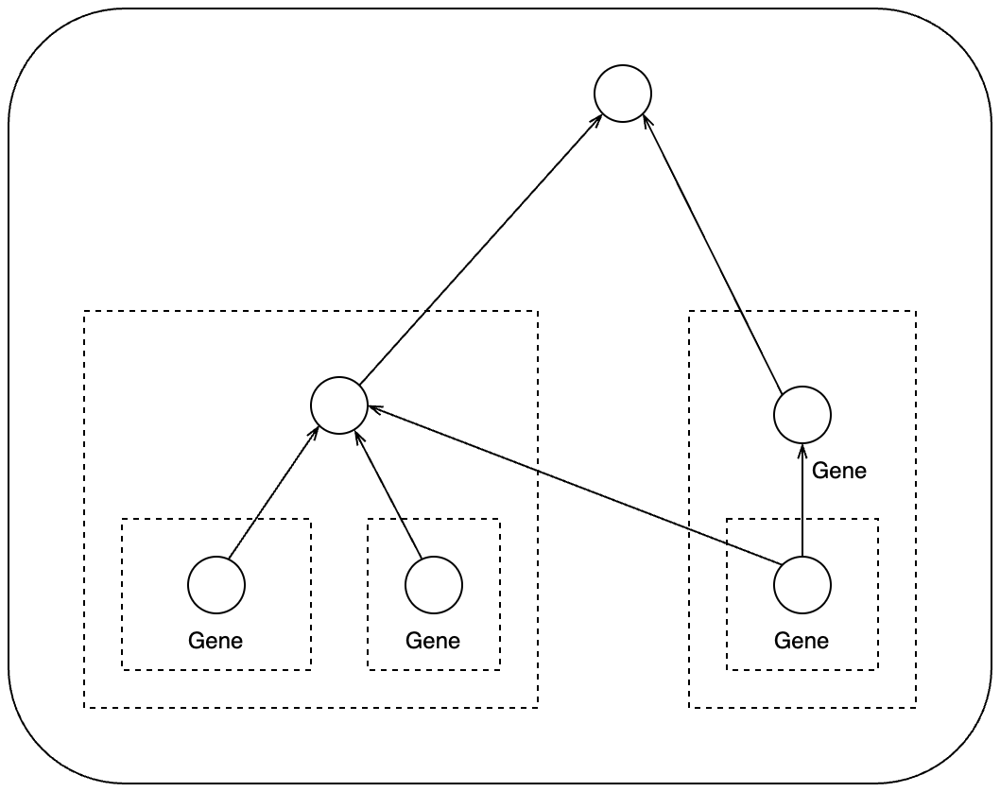
Again, org.Hs.egGO2ALLEGS is a vector-like object. There
are two ways to obtain gene annotations to GO terms.
lt = as.list(org.Hs.egGO2ALLEGS)
lt[3:4]## $`GO:0000017`
## IDA IMP ISS IDA
## "6523" "6523" "6523" "6524"
##
## $`GO:0000018`
## IDA IDA IDA IDA IEA IMP
## "25" "60" "86" "142" "604" "641"
## IDA IEA IEA IDA IDA IDA
## "708" "940" "958" "1111" "1387" "1457"
## IBA IMP IBA IDA IDA IBA
## "2068" "2074" "2187" "2521" "2956" "3005"
## IBA IBA IBA IBA IBA IBA
## "3006" "3007" "3008" "3009" "3010" "3024"
## IDA IEA ISS TAS TAS NAS
## "3276" "3558" "3565" "3565" "3575" "3586"
## TAS TAS IEA TAS IDA IEA
## "3836" "3838" "4292" "4361" "4436" "4436"
## ISS IDA ISS IDA IEA IMP
## "4436" "4437" "4683" "5347" "5395" "5531"
## IEA IDA IMP IDA IEA ISS
## "5788" "5888" "6118" "6502" "6778" "6830"
## IDA IBA IMP ISS IDA IDA
## "6944" "7014" "7014" "7014" "7037" "7040"
## IDA IMP ISS IEA IDA IEA
## "7158" "7158" "7292" "7320" "7454" "7468"
## IDA IDA IDA IBA IDA IDA
## "8089" "8295" "8607" "8741" "8741" "8914"
## IBA IDA IEA IEA IDA ISS
## "8971" "9025" "9400" "9466" "9643" "10039"
## IDA IDA IDA IDA IDA IDA
## "10097" "10111" "10459" "10524" "10635" "10721"
## IMP IDA IDA IDA IBA IBA
## "10721" "10856" "10902" "10933" "11105" "22891"
## IMP IEA ISS IMP IMP IDA
## "22891" "22976" "22976" "23028" "23347" "23514"
## ISS IDA IDA IDA IEA IEA
## "23529" "26122" "26168" "29072" "30009" "50943"
## IEA ISS IMP IDA IDA IBA
## "51010" "51111" "51149" "51548" "51588" "51750"
## IMP ISS ISS IBA IDA IDA
## "51750" "51750" "54386" "54537" "54537" "54556"
## IDA IBA IMP ISS IDA IDA
## "54799" "55010" "55010" "55063" "55086" "55135"
## IDA ISS IDA IDA IDA IBA
## "55183" "55183" "55257" "55658" "55929" "56154"
## IDA IEP ISS IBA IMP IDA
## "56893" "56916" "56941" "56979" "56979" "57162"
## IDA IDA IDA IDA IDA IEA
## "57599" "57634" "63979" "64110" "64769" "79915"
## IDA IDA IEA IDA IMP ISS
## "80311" "80314" "80762" "84083" "84717" "84787"
## IDA IBA IMP ISS IBA IDA
## "84893" "92797" "92797" "113510" "115004" "115004"
## IBA IEA ISS IEA IBA IBA
## "116028" "118460" "121260" "126549" "132243" "149840"
## IDA IMP IMP ISS IMP IMP
## "149840" "151987" "154288" "154288" "158880" "196528"
## IEA ISS IBA IBA IDA ISS
## "200558" "201516" "341567" "373861" "387893" "441161"
## IBA IDA
## "112441434" "112441434"If we compare to org.Hs.egGO2EG which contains
incomplete genes:
lt2 = as.list(org.Hs.egGO2EG)
lt2[3:4]## $`GO:0000017`
## IDA IMP ISS IDA
## "6523" "6523" "6523" "6524"
##
## $`GO:0000018`
## TAS TAS TAS IEP
## "3575" "3836" "3838" "56916"The gene IDs have names. They are evidence codes of how genes are annotated to GO terms.
Let’s try toTable():
## gene_id go_id Evidence Ontology
## 1 1 GO:0002376 IBA BP
## 2 1 GO:0002682 IBA BP
## 3 1 GO:0002764 IBA BP
## 4 1 GO:0006955 IBA BP
## 5 1 GO:0007154 IBA BP
## 6 1 GO:0007165 IBA BPNow there is an additional column "Ontology". This is
convinient because org.Hs.egGO2ALLEGS contains GO terms
from the three namespaces and the as.list() cannot
distinguish the different namespaces.
Let’s calculate the frequency of evidence code:
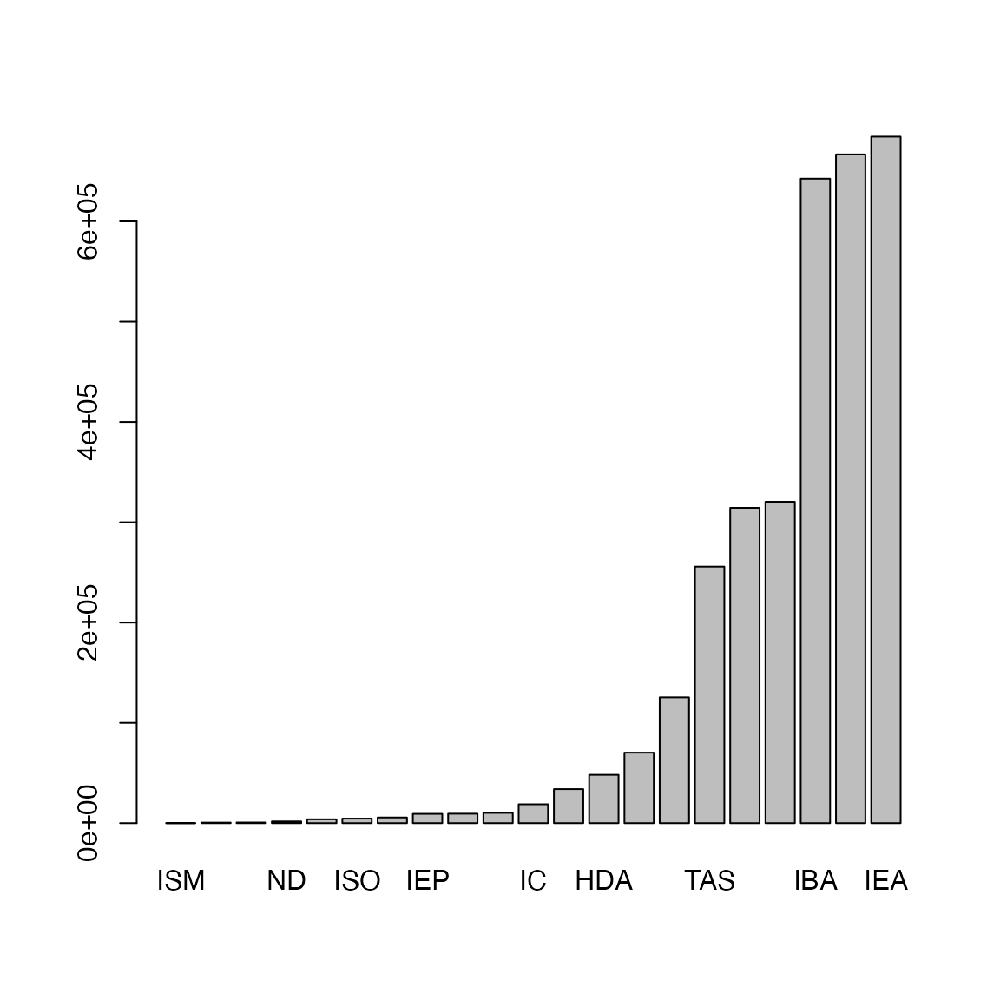
Now it seems we have obtained the complete gene-GO relations. Can we
directly use org.Hs.egGO2ALLEGS as the GO gene sets? The
answer is no, check the gene annotation for “GO:0000002”:
org.Hs.egGO2ALLEGS[["GO:0000002"]]## IMP TAS IDA IMP IMP IMP ISS IBA
## "142" "291" "1763" "1890" "2021" "3980" "4205" "4358"
## IMP IMP IBA IDA IMP IMP IBA IDA
## "4358" "4976" "5428" "5428" "5428" "6240" "6742" "6742"
## IMP IEA IEA NAS IMP IBA IC IDA
## "7156" "7157" "9093" "9361" "10000" "11232" "11232" "11232"
## IMP IBA IDA IBA IMP NAS IMP IEA
## "50484" "55186" "55186" "56652" "56652" "56652" "64863" "80119"
## IEA IBA IDA IEA IBA IMP TAS IEA
## "83667" "84275" "84275" "84461" "92667" "92667" "92667" "131474"
## IBA IMP ISS IMP
## "201973" "201973" "201973" "219736"A gene can be duplicatedly annotated to a GO term with different evidence code. Thus, to obtain the GO gene sets, we need to take the unique genes.
Let’s compare gene duplications in GO gene sets:
n1 = sapply(lt, length)
lt = lapply(lt, unique)
n2 = sapply(lt, length)
plot(n1, n2, xlim = c(0, max(n1)), ylim = c(0, max(n1)),
xlab = "with duplicated", ylab = "without duplicated",
main = "number of genes in GO BP gene sets")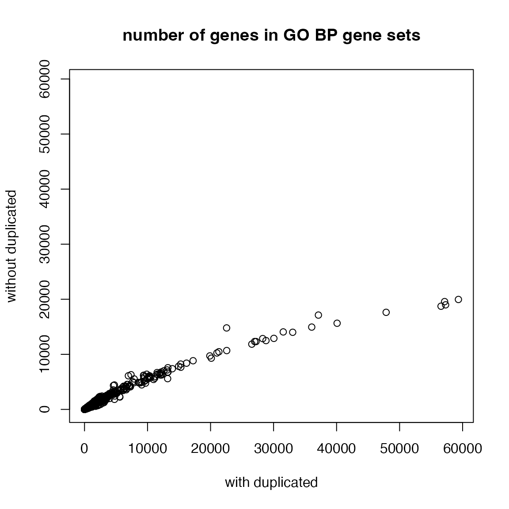
With tb, we can look at the distribution of numbers of
genes in GO gene sets. It approximately follows a power-law
distribution. This means majority of GO gene sets only contain
intermediate numbers of genes.
Let’s compare gene duplications in GO gene sets:
tb = toTable(org.Hs.egGO2ALLEGS)
tb = unique(tb[tb$Ontology == "BP", 1:2])
t1 = table(table(tb$go_id))
x1 = as.numeric(names(t1))
y1 = as.vector(t1)
ggplot(data.frame(x = x1, y = y1), aes(x = x, y = y)) +
geom_point() +
scale_x_continuous(trans='log10') +
scale_y_continuous(trans='log10') +
labs(x = "Number of annotated genes", y = "Number of GO terms") + ggtitle("GOBP")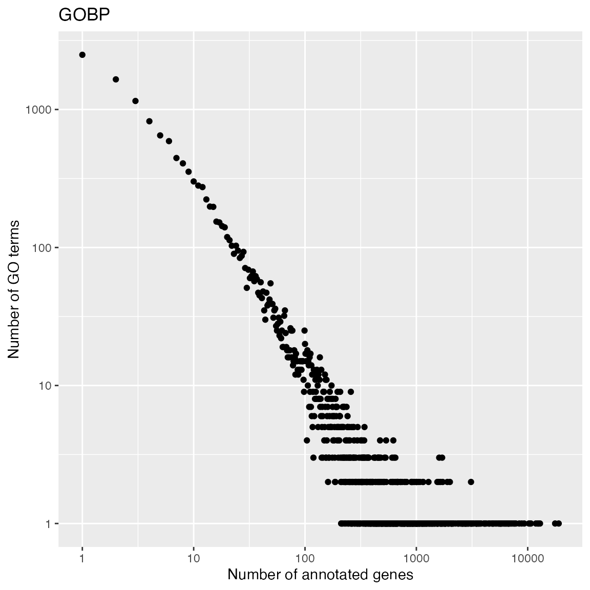
And the distribution of numbers of GO gene sets that a gene is annotated.
t2 = table(table(tb$gene_id))
x2 = as.numeric(names(t2))
y2 = as.vector(t2)
ggplot(data.frame(x = x2, y = y2), aes(x = x, y = y)) +
geom_point() +
scale_x_continuous(trans='log10') +
scale_y_continuous(trans='log10') +
labs(x = "Number of gene sets", y = "Number of genes") + ggtitle("GOBP")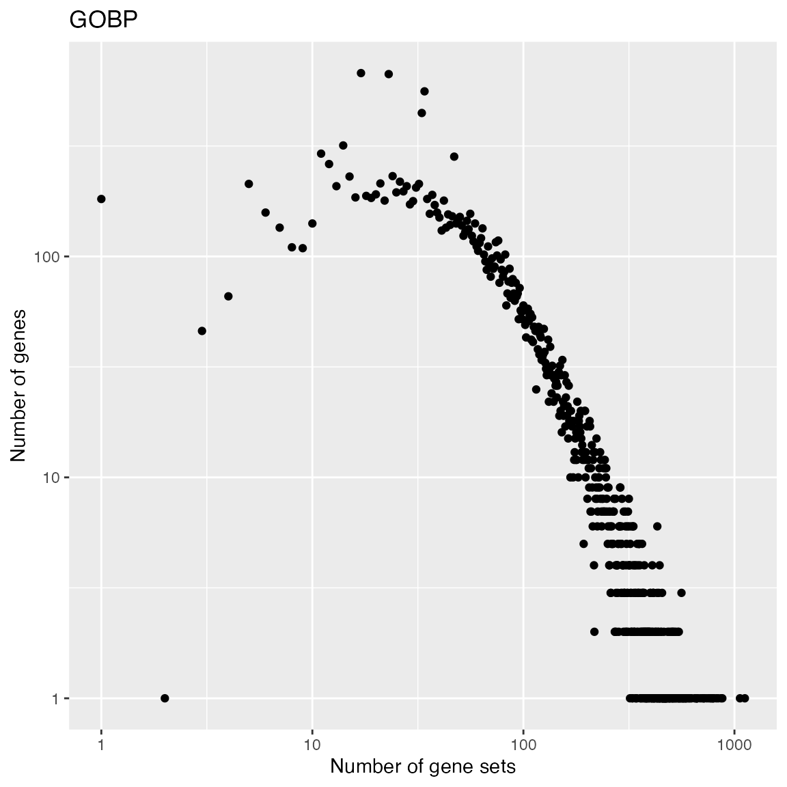
Biocondutor core team maintains org.*.db for 18 organisms
| Package | Organism | Package | Organism |
|---|---|---|---|
org.Hs.eg.db |
Human | org.Ss.eg.db |
Pig |
org.Mm.eg.db |
Mouse | org.Gg.eg.db |
Chicken |
org.Rn.eg.db |
Rat | org.Mmu.eg.db |
Rhesus monkey |
org.Dm.eg.db |
Fruit fly | org.Cf.eg.db |
Canine |
org.At.tair.db |
Arabidopsis | org.EcK12.eg.db |
E coli strain K12 |
org.Sc.sgd.db |
Yeast | org.Xl.eg.db |
African clawed frog |
org.Dr.eg.db |
Zebrafish | org.Ag.eg.db |
Malaria mosquito |
org.Ce.eg.db |
Nematode | org.Pt.eg.db |
Chimpanzee |
org.Bt.eg.db |
Bovine | org.EcSakai.eg.db |
E coli strain Sakai |
Use the select() interface
This is normally a two-step process:
- get all genes
- get all GO terms
because org.Hs.eg.db is thought of to provide ID mappings between databases.
all_genes = keys(org.Hs.eg.db, keytype = "ENTREZID")
tb = select(org.Hs.eg.db, keys = all_genes, keytype = "ENTREZID",
columns = c("GOALL", "ONTOLOGYALL"))
head(tb)## ENTREZID GOALL EVIDENCEALL ONTOLOGYALL
## 1 1 GO:0002376 IBA BP
## 2 1 GO:0002682 IBA BP
## 3 1 GO:0002764 IBA BP
## 4 1 GO:0003674 ND MF
## 5 1 GO:0005575 HDA CC
## 6 1 GO:0005575 IBA CCThen you might need to take the unique genes:
## ENTREZID GOALL
## 1 1 GO:0002376
## 2 1 GO:0002682
## 3 1 GO:0002764
## 16 1 GO:0006955
## 17 1 GO:0007154
## 18 1 GO:0007165Note the column ONTOLOGYALL can also be a valid
“keytype” column, then actually we can do “select all genes and GO terms
where ontology is BP”:
tb = select(org.Hs.eg.db, keys = "BP", keytype = "ONTOLOGYALL", columns = c("ENTREZID", "GOALL"))
# and remember to remove duplicated genesPay attention you should always use the columns with suffix “ALL” in the names for getting complete GO gene sets.
Practice
Practice 2
org.Hs.egGO2ALLEGS has already merged genes annotated to
all offspring terms. Try to manually construct GO gene sets with
GOBPOFFSPRING and org.Hs.egGO2EGS, then
compare to gene sets in org.Hs.egGO2ALLEGS.
For a GO term, we need to consider its offspring terms + the term itself:
Merge annotated genes for all offspring terms:
Compare to org.Hs.egGO2ALLEGS:
lt_genes_all = as.list(org.Hs.egGO2ALLEGS)
lt_genes_all = lapply(lt_genes_all, unique)
cn = intersect(names(lt_genes_manual), names(lt_genes_all))
plot(sapply(lt_genes_manual[cn], length), sapply(lt_genes_all[cn], length), log = "xy",
xlab = "manual gene sets", ylab = "org.Hs.egGO2ALLEGS")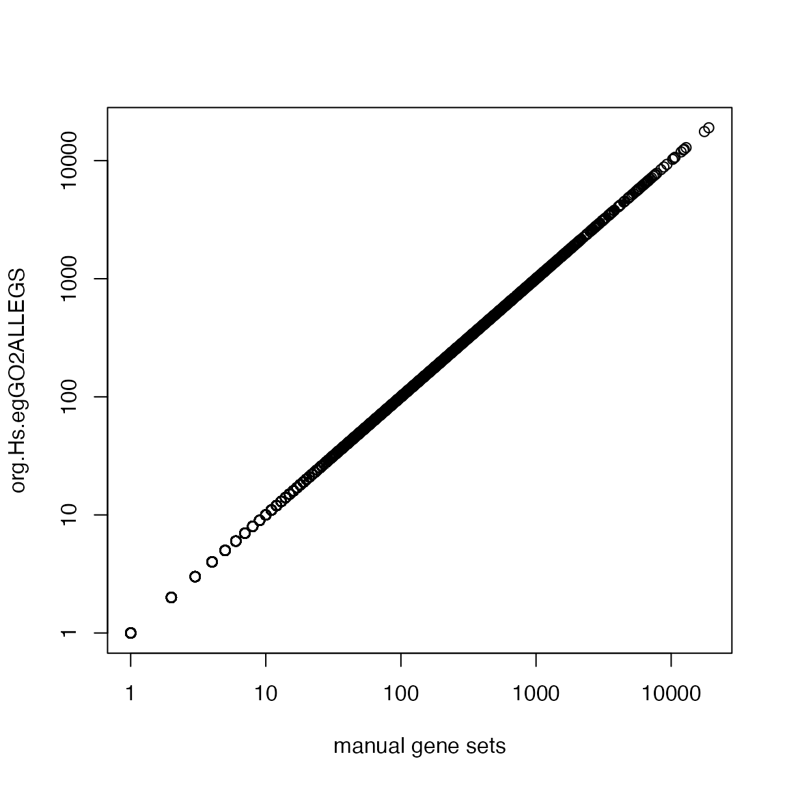